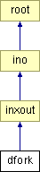

Main Page
Classes
Files
Class List
Class Index
Class Hierarchy
Class Members
dfork Class Reference
#include <
fork.h
>
Inheritance diagram for dfork:

List of all members.
Public Member Functions
dfork
(void)
~dfork
(void)
rec_typ
REC
(
data
*, int)
Public Attributes
int
noutp
Constructor & Destructor Documentation
dfork::dfork
(
void
)
dfork::~dfork
(
void
)
Member Function Documentation
rec_typ
dfork::REC
(
data
*
pd
,
int
)
[virtual]
Reimplemented from
root
.
Member Data Documentation
int
dfork::noutp
The documentation for this class was generated from the following files:
src/user/
fork.h
src/user/
fork.c
Generated on Sun Feb 14 12:32:09 2010 for Luayats by
1.6.1
 1.6.1
1.6.1